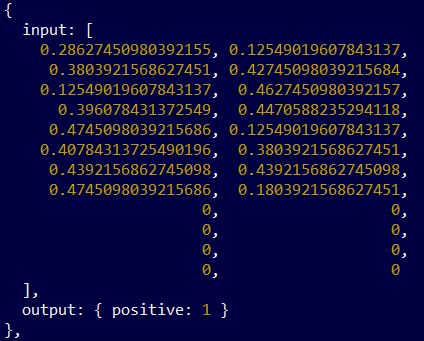
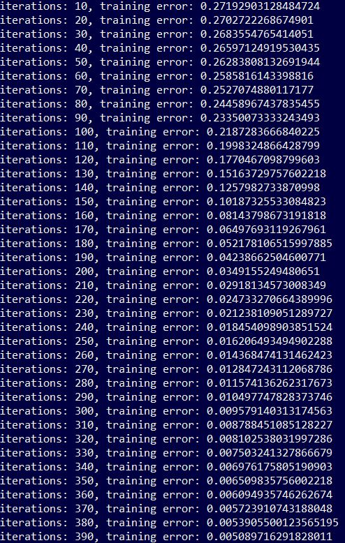
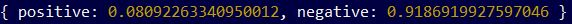

ML with JavaScript
Intro
I been have associating JS with dynamic web-app's features so far. To my surprise, with JS and brain.js library we can also build a neural networks that learn patterns and input-output relationships for making future guesses when dealing with new realted issues.
Neural Network:
- It imitates bilogical human's neural network that has some level of ability to learn.
- Such network learns to act or perform tasks by considering examples without being pre-programmed with specific for these tasks rules.
Brain.js:
- JavaScript library that provides multiple neural network implementation.
- In the code, we need to instantiate neural network.
- While instantation, we can state number of hidden layers which are between input and output layers. They do all the work e.g. when recognizing picutres, hidden layers match pixels into edges, then edges into patterns then patterns to the final figure.
- Neural network object has train() method which accepts all the training examples at once.
- The output of training not always is 0 or 1 - win or lose, dog or cat, score or miss.
- The output is the probability that based on examples of all matchs so far - a chosen football team wins or loses.
Forward-propagation and back-propagation:
- We propagate forwards through neurons to get the output from each one and compare it with the expected value to get the error.
- In order to minimize the error, we propagate backwards using gradient decent (finding min of error function) to update new weights (each neuron connection has a weigth that multiplies input value).
- Once new weights are set, we propagate forwards to see how well those weights are performing finding new error.
- Once again we want to minimize newly-found error by propagating network backwards to update lastly changed weights.
- This process of forward propagation and back propagation continues until model reachs minimal error overall.
Example:
- We have a set of football teams in a one group. Teams can be identified with integers.
- There are 4 teams:
[1,2,3,4] - Data input consists of two elements list [x, y] that stands for a match x vs y.
- Data output: [0] means x wins, [1] means y wins.
- Code:
importing and instatiating:
const brain = require('brain.js');
const net = new brain.NeuralNetwork({hiddenLayers :[3]});
data training set:
const data = [
{input : [1,3], output: [1]},
{input : [2,1], output: [0]},
{input : [3,4], output: [1]},
{input : [3,2], output: [1]},
{input : [2,4], output: [1]}
];
training neural network:
net.train(data);
giving new sample:
console.log(net.run([1,4]));
outcome:
[ 0.982649028301239 ] - When we have a match of 1 team vs 4 team then based on historical matches there is almost 100% probability of 4 team's win.
Brain.js with string data:
- As you could see Brain.js in the example above, when training neural network, it accepts only inputs of a number between 0 and 1.
- When working with strings we need to come up with model to convert string data into numbers between 0 and 1 so that we can get list of tuples:
[input, expected_output]
where:
input is a list of numbers between 0 and 1 representing the words,
output is one number between 0 and 1 representing how close the sentence is to your expected label. - We can use Recurrent Neural Networks (RNN) that enables us to train model using string data which actually are sequence of characters.
RNN:
- RNN is very helpful when we face sequential data like time series, speech, text, financial data, audio, video, weather and more.
- It's derived from feedforward networks.
| Recurrent Neural Network | Feed-forward Neural Network |
|---|---|
| Information cycles through neural network in a loop. | Information only moves in one direction: input layer >> hidden layers >> output layer |
| Information cycles in a node like a loop. Node produces output, copies that output and loops it back keeping track of all of them. | Information never touches a node twice. Output goes to output layer directly. |
| It has internal memory of received inputs and produced outputs. | No internal memory of received input. |
| It considers current input and also what it has learned from the inputs it received previously. | It only considers current input at the moment so it can't remember anything what happened in the past. |
- Special kind of RNN is Long short-term memory (LSTM)
LSTM:
- LSTM can not only process single data points such as images (like standard neural networks), but also entire sequences of data (such as speech or video).
- Basic common element of LSTM is the cell that can process data sequentially and keep its hidden state through time.
- Time varialbe and state remebering is the key advantagous of LSTM.
- Code:
const brain = require('brain.js');
var net = new brain.recurrent.LSTM();
training_data = [ {input: "training_sentence", output:"labelX"}, ... ];net.train(training_data);
new_output = net.run("example sentence I want to label");
console.log(new_output);
Features
App includes following features:
Demo
My own way:
- Regardless of therotical intro about RNN and LST, I decided to code my way of processing sequential data.
- As Brain.js accept only numbers we need to convert every single character of a sentence into unique numerical values.
- Program will be converting collection of strings into collection of numbers.
Constraints:
- Count of numerical representations of a characters in every input needs to be as the same as the longest input:
string 1:'Hello'numerical representation:[0.32, 0.55, 0.51, 0.90, 0.72]
string 2:'Hi'numerical representation:[0.44, 0.14, 0.00, 0.00, 0.00] - Missing characters are filled up with zeros in the input.
- In that way we achieve the same size of each input.
How it works:
- Here we have a set of inputs with corresponding outputs:
const training_data = [
{ input: [0,1,0], output: {zero:1}},
{ input: [0,1,1], output: {zero:1}},
{ input: [0,0,0], output: {zero:1}},
{ input: [1,1,0], output: {one:1}},
{ input: [1,0,0], output: {one:1}},
{ input: [1,0,1], output: {one:1}},
{ input: [1,1,1], output: {one:1}}
]; - Each input is a set of 3 integers what fulfils the size constraint.
- We have to claases of output zero and one.
- Basically at first sight we can say that if input starts with 1 as the first element then it gets label 'one', analogously for inputs starting with 0 - they gets label 'zero'
- Neural Network sees this so when it gets new input that hasn't seen during training i.e.
[0,0,1]
it returns probability:
{ one: 0.12, zero: 0.98 }
which says that it's almost 100% sure that given input can be labeled with 'zero' and minimum changes for labeling it as 'one'. - In this way we can simply explain how it works and to test it out - it's like a 'Hello World' check for running neural network first time.
- In the project I follow the same rule of putting list of numbers as inputs - they will be representing sentences, and assigning to them appropraite input of
{positive:1}or{negative:1}during neural model training.
Process step by step:
- Convering all the sentences into collection of numerical values.
- Finding the longest sentence and taking its characters count.
- Making all collection of numbers as the same size as the longest one by appending zeros:

- this input of numbers represents sentence: "I am very happy" - Putting fixed in size inputs through neural network for training. Program logs iterations and how it reduces training error:
 - The final step is providing a new sentence:
'This is wrong'which will be encoded by program into collection of numbers as the inputs before. - Program returns probabilities:

Setup
Following installation required:
npm initnpm i brain.js